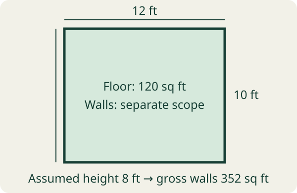

Name the surface before taking a dimension
For a rectangular floor, record length and width. For walls, record each wall’s length and height; changing ceiling heights, alcoves and irregular surfaces need separate segments. For a ceiling, identify its actual shape. Do not assume a sloped surface equals its horizontal footprint.
Label units at measurement time. “12 × 10” is incomplete without feet, metres or another unit, and an opening note needs width and height. Keep measured, assumed and unmeasured dimensions distinct. A readable photo of notes can convey written numbers; it is not a calibrated measurement extracted from the room itself.
Use safe access and suitable measuring tools. Do not climb onto unstable furniture or disturb wiring, gas lines or structural elements to finish a sheet. If access or geometry is uncertain, record the gap and use a qualified professional. The diagram below is an original example, not a surveyed plan or installation design.

Worked room: 120 square feet of floor, 352 of gross walls
Take a fictional rectangular room 12 ft long and 10 ft wide, with all four walls assumed 8 ft high. No ceiling slope, alcove or extra wall is included. The wall perimeter is 2 × (12 + 10) = 44 ft; multiplying by height gives 352 sq ft.
| Surface / opening | Dimensions in feet | Geometric area | Treatment in estimate |
|---|---|---|---|
| Floor | 12 × 10 | 120 sq ft | Flooring surface only |
| Four walls, gross | 44 total wall length × 8 height | 352 sq ft | Keep separate from floor |
| Flat ceiling | 12 × 10 | 120 sq ft | Separate ceiling scope |
| Door opening | 3 × 7 | 21 sq ft | Record; deduction policy not assumed |
| Window opening | 4 × 3 | 12 sq ft | Record; deduction policy not assumed |
If subtracting both openings for a purely geometric wall calculation, 352 − 21 − 12 = 319 sq ft. That arithmetic does not establish that 319 sq ft is the correct material-order basis. Sheet layout, cuts, offcut reuse and opening treatment matter. Keep gross 352 and geometric net 319 on the sheet with the chosen assumption.
Do not deduct a doorway from floor area simply because it is a wall opening. Likewise, walls-only scope excludes the 120 sq ft ceiling. If the contractor adds ceiling work, update scope explicitly rather than quietly changing the estimate total.
Area is one input; material size and layout are another
The Home Depot explains rectangular area and splitting a room with a nook into simpler sections. Use non-overlapping measured pieces and add them; do not count the same alcove twice. Keep a sketch so another person can understand the segments.
USG’s wallboard estimator asks for area and panel size and states that its estimate excludes waste and depends on installation practices. A generic waste percentage is not a manufacturer rule for every room. Confirm the chosen panel, orientation, layout, openings, fastening, substrate and applicable requirements with the product instructions and qualified installer.
For arithmetic only, a 4 × 8 ft panel has 32 sq ft. Gross walls at 352 sq ft equal 11 panel areas. If a hypothetical 10% allowance is applied, 352 × 1.10 ÷ 32 = 12.1, rounded upward to 13 whole panels. This is an area-based planning illustration, not a cut plan or purchase recommendation. It does not prove 13 panels will fit every wall layout, and it does not determine tape, fasteners or compound from area alone.
Enter verified dimensions in BuildCue and inspect assumptions
BuildCue’s current listing offers roofing, drywall, concrete, fence, deck, tile and mulch calculators with dimensions, waste percentage and unit cost. It also parses rough text, voice transcripts or readable photo-note text into a starter estimate. Review and correct the parsed trade, units and dimensions before calculating.
Verify the panel-size assumptions and the app’s displayed surface summary against your intended scope. A drywall estimate needs the wall or ceiling surface area you plan to cover. Feeding the 120 sq ft floor footprint into a walls-only estimate would omit most of this example’s wall area.
Premium unlocks higher AI limits, saved-project workflows and quote export. The current listing does not enumerate every numerical allowance. Review BuildCue’s current processing privacy information before optional AI notes. The app supplies planning estimates: verify product specifications, code/structural requirements, quantities and supplier pricing before ordering or quoting. For a rental repair, the linked maintenance log can preserve what you asked a professional to assess and the subsequent follow-up.
If the method fits your task, explore BuildCue’s listed features on an iPhone. Check current features and plans before downloading.
See BuildCue for iOSDownload the free worksheet
Use the CSV in Numbers, Excel or a spreadsheet editor. Five fictional dimension rows plus a blank row. Areas are values, not spreadsheet formulas; no surveyed geometry, code approval or final purchase quantity. Replace them with your own observations. The CSV is separate from the app and no email is required.
Questions answered
Can I use floor area to buy drywall for the walls?
Not as the walls-only surface area. Measure wall lengths and heights, record openings and check the estimator’s actual surface scope.
Should I always subtract doors and windows?
No universal deduction rule is supplied here. Record the openings and verify material layout and the chosen estimating method.
Can a room photo replace measured dimensions?
This guide does not establish calibrated photo measurement. BuildCue’s listing describes readable photo-note text, not guaranteed room geometry measurement.
Continue with BuildCue on iOS
Use the App Store listing to check compatibility, privacy information and current plan terms. A free download may offer paid features.
Download BuildCue for iOSSources and product details
- The Home Depot: calculate square footageRectangle and room-section arithmetic; checked October 14, 2026.
- USG: wallboard estimator assumptionsArea/panel-size inputs; waste excluded and installation-practice boundaries. Product instructions govern the actual job.
- BuildCue on the App StoreCurrent US App Store product description; checked October 14, 2026.
Editorial method: primary guidance, a current Apple listing, an original worked example and an independent critique. No search ranking, install or outcome result is claimed.